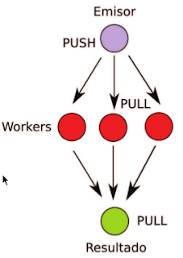
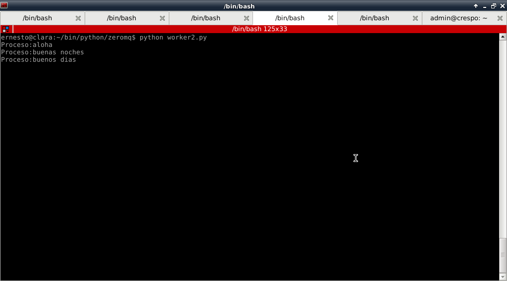
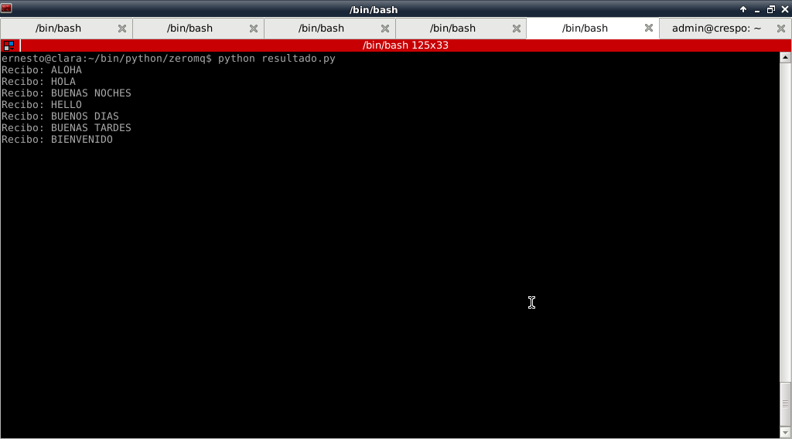

Tutorial de ZeroMQ con Python( PUSH/PULL). Parte 6.
Publicado el dom 03 junio 2012 en Tutorial Python • 3 min de lectura
Siguiendo con la serie sobre ZeroMQ.
En este artículo se explica el funcionamiento de PUSH y PULL.
La idea es que se tiene el emisor, quien envía a los "workers" unos string que son procesados de distinta manera o de igual manera (una forma de crear escalabilidad). Luego que los "workers" procesan la información recibida del emisor se la pasan a resultado quien presenta la información en pantalla.
La figura muestra el proceso ya explicado:

El código del emisor es el siguiente:
#!/usr/bin/python
#Se importa zeroMQ y random
import zmq
import random
#Se crea la instancia del contexto
context = zmq.Context()
#Se crea el socket con el argumento PUSH
envio =context.socket(zmq.PUSH)
#Se asocia el socket a escuchar todas las IPs y el puerto 5557
envio.bind("tcp://*:5557")
#se muestra que es necesario esperar que arranquen los workers
print "Hay que esperar que los workers se inicien"
#Al dar enter se inicia el proceso de transmision
raw_input()
print "Se inicia la transmision del trabajo..."
#tupla de strings que se van a enviar
cadenas = ['hola', 'aloha','hello','buenas noches','buenas tardes','buenos dias','bienvenido']
#Se crea un ciclo para recorrer la tupla
for i in range(len(cadenas)):
cadena = cadenas[i]
envio.send(cadena)
print "Enviando: {0}".format(cadena)
El código del worker es el siguiente:
#!/usr/bin/python
#Se importa ZeroMQ y sleep de time
import zmq
from time import sleep
#Se crea la instancia del contexto
context = zmq.Context()
#Se define el Socket con argumento PULL
recepcion = context.socket(zmq.PULL)
#Se conecta el socket a localhost puerto 5557
#Es el puerto donde origen envia con PUSH los datos
recepcion.connect("tcp://localhost:5557")
#Se crea el socket de envio de los datos procesados con argumento PUSH
envio = context.socket(zmq.PUSH)
#Se conecta el socket a localhost y puerto 5558
envio.connect("tcp://localhost:5558")
#Se genera un ciclo
#donde se recive lo transmitido por origen
#se procesa (se coloca en mayusculas)
#se muestra en pantalla y se envia.
#los ciclos tienen un retardo de 1 seg
while True:
cadena = recepcion.recv()
print "Proceso:{0}".format(cadena)
envio.send(cadena.upper())
sleep(1)
El código de resultado es el siguiente:
#!/usr/bin/python
#Se importa ZeroMQ
import zmq
#Se crea la instancia del contexto
context = zmq.Context()
#Se crea el socket PULL que recibe los mensajes de los workers
recepcion = context.socket(zmq.PULL)
#Se asocia el socket a escuchar todas las IPs en el puerto 5558
#el puerto donde los workers envian los mensajes
recepcion.bind("tcp://*:5558")
#Se inicia un ciclo donde se recibe los mensajes
#de los workers y se muestra en pantalla
while True:
mensaje = recepcion.recv()
print "Recibo: {0}".format(mensaje)
Se tiene que iniciar los scripts resultado, worker (worker1 y una copia identica llamada worker2) y origen.
La siguiente figura muestra el resultado de origen:
La siguiente figura muestra el resultado del worker1 y worker2:


Se nota que los workers se distribuyen el trabajo de forma equitativa.
En la siguiente figura se muestra lo que despliega en pantalla resultado:

Como se ve, los workers procesan las cadenas de texto que reciben de origen, las pasan a mayúsculas y se la envían a resultado para que las muestre en pantalla.
¡Haz tu donativo! Si te gustó el artículo puedes realizar un donativo con Bitcoin (BTC) usando la billetera digital de tu preferencia a la siguiente dirección: 17MtNybhdkA9GV3UNS6BTwPcuhjXoPrSzV
O Escaneando el código QR desde la billetera: